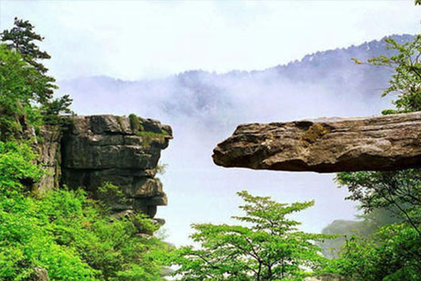
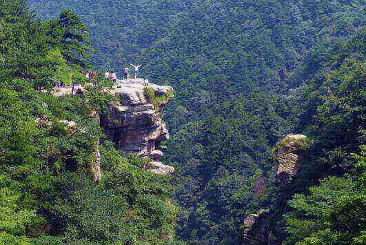
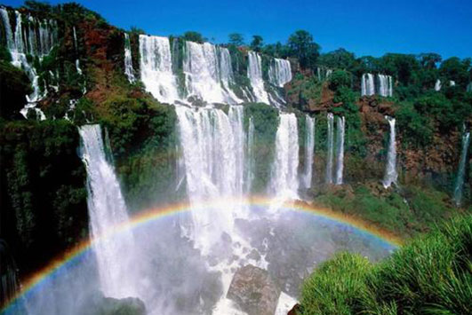
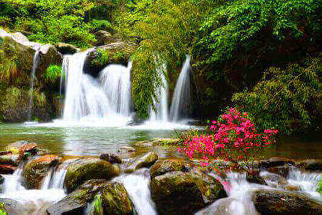
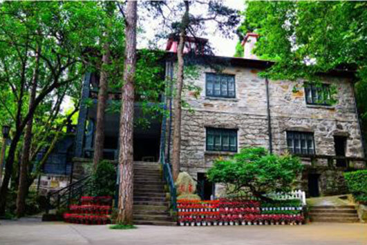
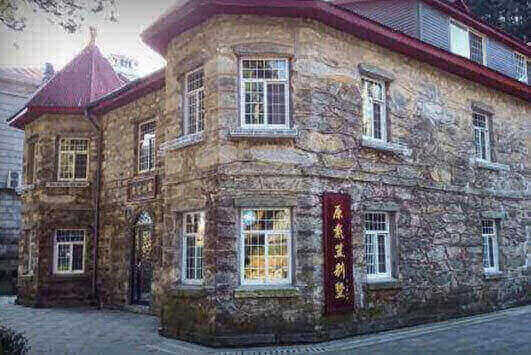

morly旅游网
庐山，又名匡山、匡庐，位于江西省九江市庐山市境内。庐山以雄、奇、险、秀闻名于世，素有“匡庐奇秀甲天下”之美誉。是世界文化遗产、世界地质公园、国家重点风景名胜区、国家AAAAA级旅游景区、中华十大名山、中国最美十大名山、全国重点文物保护单位、中国四大避暑胜地、首批全国文明风景旅游区示范点。
庐山风景秀丽，文化内涵深厚，集教育名山、文化名山、宗教名山、政治名山于一身。从司马迁“南登庐山，观禹所疏九江”，到陶渊明、昭明太子、李白、白居易、苏轼、王安石、黄庭坚、陆游、朱熹、康有为、胡适、郭沫若等文坛巨匠1500余位登临庐山，留下4000余首诗词歌赋的文化名山。庐山文化深厚，去了庐山可以瞻仰这些前人留下的历史文化。
庐山的自然风景也十分秀丽，有不识庐山真面目,只缘身在此山中之诗句。庐山好玩的景点有锦绣谷、三叠泉、含鄱口、庐山美庐、五老峰、植物园、三宝树、花径、 芦林湖等。 锦绣谷是由大林峰与天池山交汇而成。因四季红紫匝地，花团锦簇，故名锦绣。毛主席的七绝诗：“暮色苍茫看劲松，乱云飞渡仍从容。天生一个仙人洞，无限风光在险峰。”所描写的就是锦绣谷景色。锦绣谷的景色十分迷人，去过的人都难以忘怀。是一个值得人们游玩的景点。三叠泉古人称“匡庐瀑布，誉为“庐山第一奇观”。古人描绘曰：“上级如飘云拖练，中级如碎石摧冰，下级如玉龙走潭。极为壮观，撼人魂魄。由此可以看出三叠泉的景色是十分壮观的，不去游览一番，岂不可惜。含鄱口位于东南部含鄱岭的一个山口，是中国九大观日出地之一，最佳地为含鄱亭。登上含鄱亭，极目四眺，湖光山色，尽收眼底。在含鄱口，你可以登高远望四周的山水风光。庐山美庐是庐山别墅的优秀代表。是国内极少的国共两党最高领导人共同居住过的房屋。在庐山美庐你可以看到国民政府要员们在“夏都”政治活动的历史照片、历史物品以及牯岭历史及20世纪30年代所拍摄的庐山名胜照片等。庐山的风景这么秀丽，不去游览一番，岂不是人生一大憾事。
门票价格
旺季（4月1日—11月31日）：160.00元。淡季（12月1日—3月31日）：135.00元。
锦绣谷
谷中不仅花奇，而且石怪，垒垒巨石，形态各异，奇峰怒拔，气象万千。有的如白发老翁，有的似跳出水面的青蛙，有的若搏斗的双狮、扬鬃撒足的野马、翱翔长空的雄鹰，还有的象观音对台梳妆。人们给这里的峰岩取了许多动人的名字，赋予它们优美的传说，牵动了无数游人的思绪。
 三叠泉
三叠泉从大月山流出，经过五老峰背，由北崖悬口注入大盘石上，又飞泻到二级大盘石，再喷洒至三级盘石，形成三叠，故名；势如奔马，声若洪钟
 含鄱口
在含鄱口的清晨，只见鄱阳湖上晨光熹微，天水一色， 一轮红日射湖而出，金光万道，霎时湖天尽赤，半壁河山成了一幅灿烂绚丽的画卷。 雄伟、瑰丽、云浓雾密，莽莽苍苍，状如鱼脊的含鄱岭，像一座屏界屹立在庐山的东南方。
庐山美庐
美庐演化出的历史轨迹与世纪风云紧密相联，它曾是一处“禁苑”，日夜被包裹在漂浮的烟云中，令人神往，又令人困惑。如今“美庐”敞开它的真面目，以它独有的风姿和魅力，吸引着众多的海内外的游人。
 内容整理至网络，如有侵权，请联系我们！1255394075@qq.com